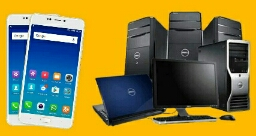
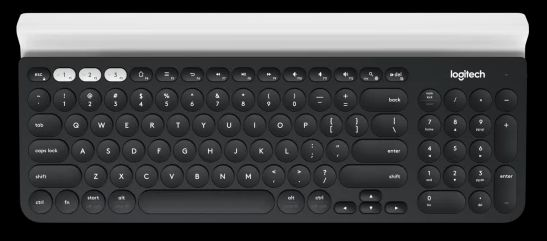
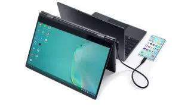

Your Phone as a Computer

Do you have a flash state of the art phone? Do you want it to be your first device of choice and to be able to use it as your laptop too? Then read on.
Written By: Geovian
Date: 10 April 2021
Introduction
For far too long the business world has lived in a duopoly environment of mobile phones and computers - be it desktops, laptops and tablets. From my perspective it's an incredible waste of money, not forgetting the huge amounts of E-waste that is created every year.
Having seperate devices back in the early days was definitely warranted, as mobile phone specifications were very basic, certainly not as sophisticated as they are today. However, the perceived gap between the usage on a state of the art mobile versus a laptop for instance - is being bridged slowly but surely. One of the mobile phone's features that is helping pave the way is a bit of functionality in the Google/Android space, it's something called Desktop Mode.
Desktop Mode
This feature has been around for a little while, but has been given very little love by the software Engineers at Google. It is part of the Android ecosystem including the latest version 11 but really Google is asking for the phone manufacturers to take the functionality already there and improve upon it with a bit of spit and polish on their own flagship phones.
There are also some software developers that are building Linux distros that can interface with compatible 'desktop-mode enabled phones. An example being Maru OS which is exclusively interfacing with Google's Nexus brand of phones at the moment, but the lead developer there says the intention is to interface with all Android phones, which sounds like a bit of a stretch, particularly for older phones.
The phone manufacturers which have led the charge include Samsung, Huawei and LG, while Oppo and Xiaomi have also jumped onboard with at least one of their phones being desktop-mode enabled. Future builds of phones are expected to include desktop-mode by default, though phone manufacturers that triple up as laptop, tablet and chromebook manufacturers may be initially cautious, as they could cannibalize their own market share for those products.
So anyway, what does Desktop-Mode do?
So long as you have a compatible phone that can run desktop mode, the idea is to connect your phone to a portable monitor that acknowledges phones via HDMI at one end, paired with a device that has a USB-C port at the other end.
Not only can you connect a phone to a portable monitor to get a bigger (or even second separate) screen, you can also connect a game console or even a RaspberryPi to the portable monitor because those ecosystems support desktop mode too. In the Samsung universe we are talking Samsung Dex, with Huawei they call theirs Easy Projection while LG's is simply LG Desktop Mode.
I have never used Samsung Dex but some people I know around the world swear by it and started putting their laptops and desktops into retirement. Being able to use your phone and two different modes definitely has some advantages. If you're working on large spreadsheets and PowerPoint presentations, these are things that you can blast out onto a bigger screen more so than you could do on a phone. That's only one efficiency, there are many more.
Selecting a portable monitor
The Internet is home to a dime a dozen selection of devices such as portable monitors, whether you buy on Amazon, eBay or AliExpress, there's something there for everybody. However, with desktop mode you'll need to be a little bit more prudent in your selection, as there are some features you'll need to consider.
Low Power Option
Most decent monitor manufacturers include a dual power supply option with two connection jacks. One for the standard 12v connection to the wall (country specific) as well as a 5v USB-C connection to a battery bank. The latter would mean you could supply battery bank power to both your phone and RaspberryPi for instance plus the monitor, all the while without impacting on your electricity bill. An excellent option for The Great Outdoors too, but only if you can get guaranteed mobile phone service.
Portability
It goes without saying, a portable monitor is the ultimate portability solution for that busy executive who needs to be productive on the road but without sacrificing any of the tools that he would use in the office. If you purchase a suitable portable monitor then usually it will come with a carry case. Probably the other things you might need is something like a kickstand and a lapdesk, which is just a foldaway table that you can sit yourself underneath whether on the couch or sitting up in bed, this would be your work bench.
Touchscreen or no Touchscreen
My own personal opinion is that a touch screen and portable monitor go hand in hand. A hand fits glove arrangement. I couldn't comprehend using one without touchscreen being enabled. But at the end of the day it all depends on what the manufacturer specifications are for its touchscreen as well as the price. The price can certainly vary, so you do need to do some homework and selective shopping before you hand over your hard earned cash.
If you are going to be purchasing a non touchscreen monitor, then you'll need to run it in conjunction with a suitable keyboard and mouse, either wirelessly connected via USB or Bluetooth connected (but without the cables).
Keyboards and Mice
We wrote briefly about keyboards and mice in the previous section. There are four things to consider:
- Does your portable monitor have its own kickstand to sit it upright? If so, great. Any wireless or Bluetooth keyboard should suffice.
- If not, then a lapdesk with a sufficiently sized monitor slit should be considered.
- If you don't want to use a lapdesk then perhaps a keyboard which has a monitor slot or Groove at the front of it much like the Logitech K780 keyboard could be the answer. I have one of those Logitech keyboards and it works great, in fact I can actually put a phone and tablet in the slot and it does the job.
- If you are going to be using your keyboard and mouse alongside your flash new lapdesk (as described above), just be careful about the length of the keyboard because it may actually be longer than the lapdesk itself, meaning there is no room for the mouse to be placed. Unless of course you are using a keyboard kitted out with a trackpad.

Logictech K780 keyboard with device slot along the top.
Connectivity to the Internet
Your internet connection is dependent on your mobile phone. We'll just focus on mobile data and not WiFi. Assuming you have a mobile phone service and Bluetooth enabled, you can then work seamlessly on your portable monitor by using the HotSpot functionality. If you use a RaspberryPi, just go into your network options via the top menu bar (right hand side) and find your phone's Bluetooth connection to pair it up. The phone's HotSpot password is required to connect, enter that on your RPi to gain Internet access, and you are good to go.
Portable Monitor Types
There are four types of portable monitors. Know which one you need.
- No touchscreen capability but with USB-C power. Use primarily as a second extended monitor to your source device.
- No touchscreen and no USB-C power capability (just a direct 12v wall adapter). Same as above.
- With touchscreen, but no USB-C power capability. Requires powering from the wall which hardly makes it portable.
- With touchscreen, and with USB-C power capability. You can go on a road trip with this configuration!
Believe me when I say that manufacturers do not read off the same page when it comes to designing monitors. You would think that there would be some sort of basic standard that they were using as their build template, but no, they go off and decide to be different to everybody else.
As for the options listed above, option 4 is probably the best bet but it will probably also be the most expensive.
Portable Monitor Recommendations
It would be remiss of me to not make mention of some portable monitors that I would consider buying. In fact one of the models that I'm going to list below is definitely on my wants list. So let's take a look at a couple.
Nexdock 360
Nexdock is an American company that has produced so far, four iterations of its portable monitor range, for which the 360 is the most current. It's full-bore touchscreen with a hinge that allows for the two surfaces (screen and keyboard) to completely fold over 360°, hence the name.

It's obvious to me that Nexdock have some great products but they come with a few caveats:
- The company initially got underway through a crowd funding initiative, and as with most ventures like this, were mostly supporting those who had participated via pre-order, meaning that there was very little product left to be onsold to the public. You know the deal right? You have to be in to win.
- As a consequence, Nexdock do not have extensive market coverage. They are essentially just selling from their own website. They do not sell via any of the big e-commerce chains, and its unclear what their supply capacity is.
- I have heard claims from people online about the delays in getting the product delivered to them on time. Some of the delays were incredibly long, in one case over a year. That in itself would be enough to make me look elsewhere.
- Some people (particularly from those living outside the USA) would consider the unit cost to be pricey, especially compared to what you can find on AliExpress. For instance, Chinese products can be sold for half the price, but as they say, you get what you pay for, and in some cases you don't get anything for what you paid for because it never turned up! Lol!
Uperfect
Perhaps the pick of the Chinese manufacturers is Uperfect. They are represented all over the Internet, and if you do a Google search or go prowling through YouTube, you will see a dazzling array of videos and ads that are colourful and enticing. Obviously their marketing department is doing a good job but from what I can tell their products are also pretty decent too, but it depends on who you talk to.
They have a range of different monitors in different configurations and sizes, touchscreen and non touchscreen and the prices for them reflect the differences in functionality. The price differential between say Amazon v AliExpress for UPerfect monitors is very noticeable.
On AliExpress you can pick up a decent touchscreen like the 12.3" Model for around 250 Australian (less discounts and coupons, but plus taxes). However, the issue is navigating through the minefield that is the online AliExpress experience. Good luck to you on that. I'm not having any luck, and trying to deal with these people in Hong Kong is a bit like trying to deal with ghosts. You just never see them.
That model isn't available on Amazon but I know that particular model is sold directly from the Uperfect website at US$195 (or currently A$267 on the US to Australian exchange rate), plus they don't charge for shipping or taxes whereas AliExpress do.
So my recommendation is that you'd be better off dealing directly with the manufacturer instead, rather than dodgy sellers on e-commerce platforms because you're dealing direct with the manufacturer and it will ship faster.
Note: As at 2023, Uperfect no longer manufactures the 12.3 model. Nor even the 13.3 model. Bigger spec monitors are now available at reasonable prices, check the website above.
There are a few other monitor manufacturers that you might consider looking at:
- ViewSonic
- Asus
- AOC
- John Will
- Lepow
- Waveshare
- Espresso
- LG
- UCTronics
- Innoview
I haven't seen anything that's within my criteria (mainly price), but if I suddenly win the lottery then I'm in for all money!
That's a wrap
The ability to use a phone with a portable monitor is somewhat limited by phone manufacturers at large not providing desktop mode. Only a handful currently do. Also, older phones that only have a MicroUSB socket might not be able to take advantage. I may be proven to be incorrect on that, considering older phones can connect to external devices via OTG but the connection can be erratic due to frequent dropouts.
One of the advantages of using USB-C is that transfer speeds between devices is much faster. I'm very interested in using the RaspberryPi device to hook up to a portable monitor. It would be the equivalent of using a Samsung Galaxy Tab, but the RPi solution with a 12.3" or 13.3" monitor is slightly larger and cheaper, and more flexible in terms of the different Linux ARM distros you can load up.
Good luck in your search.